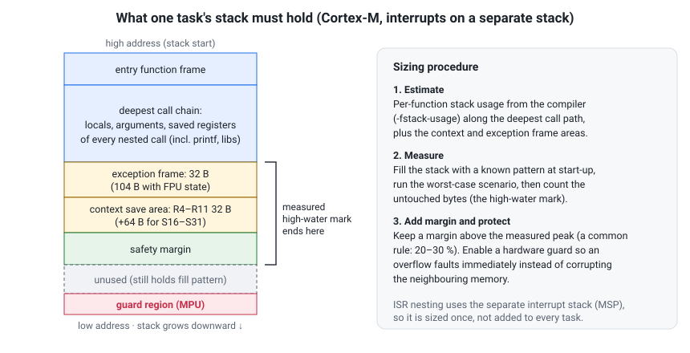

Design guidance and common mistakes
The previous lessons explained the mechanisms. This one turns them into design rules: how to assign priorities, how big to make stacks, how to keep shared state out of trouble, and how to use the kernel safely from interrupts.
- Assign task priorities with the rate-monotonic and deadline-monotonic rules and check them with response-time analysis.
- Size a task stack by estimate and by measurement, and protect it against overflow.
- Apply ownership and message passing to minimise shared state, and protect what remains correctly.
- Use the kernel API correctly from ISRs.
- Review a design against a checklist of the most common beginner mistakes.
1 · Choosing task priorities
Priority expresses urgency (how soon after its trigger a task must finish), not importance. A safety monitor that runs once a second with a 1-second deadline can safely have a lower priority than a 1 kHz motor loop.
Rate-monotonic priority assignment (Liu & Layland, 1973): for periodic tasks whose deadline equals their period, give higher priority to tasks with shorter periods. Among fixed-priority assignments it is optimal: if any fixed-priority order meets all deadlines, rate-monotonic does.
Deadline-monotonic assignment: when deadlines are shorter than periods, give higher priority to shorter deadlines. It is optimal in that case.
Two checks tell you whether a task set is schedulable:
- Utilisation bound (sufficient, not necessary): n tasks under rate-monotonic priorities meet all deadlines if
U = Σ Cᵢ/Tᵢ ≤ n(21/n − 1). The bound is 0.828 for 2 tasks, 0.780 for 3, and tends to ln 2 ≈ 0.693. Above it the test is inconclusive, not failed. - Response-time analysis (exact for this model): the worst-case response time of task i is the smallest fixed point of
Rᵢ = Cᵢ + Bᵢ + Σj ∈ hp(i) ⌈Rᵢ / Tⱼ⌉ · Cⱼ, where C is execution time, T period, hp(i) the higher-priority tasks, and Bᵢ the longest blocking by lower-priority tasks (critical sections, bounded by the protocols of Lesson 11). The task meets its deadline if Rᵢ ≤ Dᵢ.
| Task | C (ms) | T = D (ms) | Priority (rate-monotonic) |
|---|---|---|---|
| τ1 motor loop | 1 | 4 | high |
| τ2 sensor fusion | 2 | 6 | medium |
| τ3 telemetry | 3 | 12 | low |
Utilisation: 1/4 + 2/6 + 3/12 = 0.833 > 0.780: the bound is inconclusive, so compute response times.
- τ1: R = 1 ≤ 4 ✔
- τ2: R = 2 + ⌈2/4⌉·1 = 3; again 2 + ⌈3/4⌉·1 = 3 → R = 3 ≤ 6 ✔
- τ3: start R = 3. 3 + ⌈3/4⌉·1 + ⌈3/6⌉·2 = 6 → 3 + ⌈6/4⌉·1 + ⌈6/6⌉·2 = 7 → 3 + 2 + ⌈7/6⌉·2 = 9 → 3 + ⌈9/4⌉·1 + ⌈9/6⌉·2 = 10 → 3 + 3 + 4 = 10. R = 10 ≤ 12 ✔
All deadlines are met. Now suppose τ3 and τ1 share a mutex and τ3 holds it for up to 1 ms. With inheritance, τ1 can be blocked once: B₁ = 1, so R₁ = 2 ≤ 4 ✔. τ2 can also be delayed by that critical section (τ3 runs it at τ1's priority), so B₂ = 1 and R₂ = 4 ≤ 6 ✔. Without inheritance B₁ is unbounded and the analysis cannot be done at all.
Practical rules:
- Deferred-interrupt handler tasks go near the top; background work (logging, diagnostics, UI animation) goes to the bottom.
- Use few distinct levels and leave gaps between them so tasks can be inserted later.
- Give equal priority only to tasks without deadlines relative to each other.
- Measure execution times on the target (worst case, with caches cold where it matters), not on a simulator.
2 · Sizing stacks

A stack that is too small does not fail cleanly. Without protection, the overflow silently overwrites whatever lies below it in memory, often another task's stack or a kernel object, and the crash appears somewhere unrelated. Treat stack sizing as a measured quantity:
- Estimate from the compiler's per-function stack usage along the deepest call path. Watch for recursion, large local arrays, variable-length arrays, and library calls: formatted printing with floating point can need over a kilobyte by itself.
- Measure by painting the stack with a known pattern at start-up, running the worst-case scenario (all features, error paths, maximum message sizes), and reading the high-water mark.
- Add margin above the measured peak (20–30 % is a common rule) and enable a hardware stack guard so an overflow faults at once at the guilty task.
Interrupt nesting on Cortex-M uses the separate interrupt stack, so size that once for the deepest nesting of ISRs. Each task stack needs only one exception frame: 32 bytes, or 104 bytes when the FPU context is stacked, plus the kernel's saved registers.
3 · Avoiding shared-state bugs
Most concurrency bugs are shared-state bugs. The most effective fix is to have less shared state.
- Give every piece of data one owner. Only the owning task writes it. Others receive copies through queues or ask the owner through requests.
- Prefer message passing to shared variables. A queue transfers data and synchronisation in one operation with no lock in user code.
- Make data immutable where possible. Configuration tables written once at start-up and read-only afterwards need no lock.
- Protect what must be shared, consistently. One lock per invariant; every access uses it; check-then-act stays inside one critical section.
- Use atomics for single words (counters, flags, reference counts) instead of locks.
- Know what
volatiledoes. It forces the compiler to perform each access, which is required for hardware registers and ISR-written flags. It does not make read-modify-write atomic and does not replace a lock. - Watch for torn reads. On a 32-bit core, a 64-bit timestamp or a multi-field structure is read in several instructions; a writer can run between them.
- Remember the hardware as a concurrent actor. On a Cortex-M7 with a data cache, a DMA engine and the CPU can see different contents of the same buffer. Place DMA buffers in non-cacheable memory or perform explicit cache clean/invalidate operations.
4 · Using the kernel safely from ISRs
| Allowed in an ISR | Not allowed in an ISR |
|---|---|
|
|
Some kernels have separate "from ISR" variants of each call; others, including Zephyr, use the same function and require the no-wait timeout from interrupt context. Either way, check the documentation of every call you place in an ISR.
5 · Common beginner mistakes
- Busy-waiting or polling in a task instead of blocking on a kernel object (Lesson 01).
- Using delays as synchronisation ("by then it will be ready") (Lesson 01).
- Priorities assigned by "importance" or all equal (Lesson 02, Section 1 above).
- Assuming a C statement such as
x++is atomic (Lesson 03). - Using the FPU from several tasks without FPU context saving (Lesson 03).
- Doing heavy work in an ISR, or calling blocking APIs there (Lesson 04).
- Wrong initial semaphore count; binary semaphores used to count events (Lesson 05).
- A semaphore used as a lock, losing ownership checks and priority inheritance (Lessons 05, 06, 11).
- A mutex left locked on an error path, or locked in some accesses but not others (Lesson 06).
- Clearing an event bit another waiter still needed (Lesson 07).
- Sending a pointer to a stack variable through a queue; using a buffer after its ownership moved (Lesson 08).
- Queues sized by guesswork, with send failures ignored (Lesson 08).
- Two locks acquired in different orders by different tasks (Lesson 10).
- Blocking (on a queue, a semaphore, a delay) while holding a mutex (Lessons 10, 11).
- Infinite timeouts everywhere, so design errors become silent hangs (Lesson 10).
- Stack sizes copied from an example and never measured (Section 2 above).
What this becomes in Zephyr
- Priorities: preemptible thread priorities 0 …
CONFIG_NUM_PREEMPT_PRIORITIES−1 (lower number = more urgent); reserve cooperative (negative) priorities for short, non-preemptible work. Measure execution time withk_cycle_get_32()ortiming_counter_get()(CONFIG_TIMING_FUNCTIONS). - Stacks:
K_THREAD_STACK_DEFINE()for each thread;CONFIG_MAIN_STACK_SIZE(default 1024),CONFIG_ISR_STACK_SIZE(default 2048),CONFIG_SYSTEM_WORKQUEUE_STACK_SIZE(default 1024).CONFIG_INIT_STACKS=ypaints stacks with0xaa;CONFIG_THREAD_ANALYZER=yreports per-thread usage;k_thread_stack_space_get()returns unused bytes at run time.CONFIG_HW_STACK_PROTECTION=y(MPU stack guard on this Cortex-M7) faults on overflow;CONFIG_STACK_SENTINELis a software fallback. - Shared state:
k_msgqandk_fifofor ownership-based designs;atomic_twithatomic_inc(),atomic_set_bit(),atomic_cas();k_spinlockfor ISR-shared data. The STM32F7's data cache is managed withsys_cache_data_flush_range()/sys_cache_data_invd_range(), or by placing buffers in a non-cacheable region. - ISR safety: the Zephyr API documentation marks ISR-callable functions as "isr-ok"; those that may block require
K_NO_WAITin interrupt context.CONFIG_ASSERT=yduring development catches many illegal calls. - Checking the result:
CONFIG_THREAD_RUNTIME_STATSfor CPU load per thread, and the kernel shell for thread states and stack usage.
Where to go next
This completes the theory. The tutorial series that follows applies each lesson on the STM32F769I-DISCO with Zephyr, starting with 01_binary_semaphores. Return to the course home for the full map.